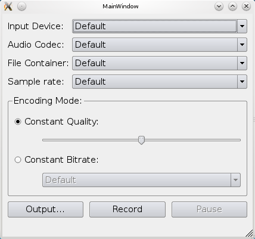

Audio Recorder Example
Discovering the available devices and supported codecs.
Audio Recorder demonstrates how to identify the available devices and supported codecs, and the use of QAudioRecorder class.

Running the Example
To run the example from Qt Creator, open the Welcome mode and select the example from Examples. For more information, visit Building and Running an Example.
Displaying the Window and Audio Settings
We display a window for the user to select the appropriate audio input, codec, container, sample rate, and channels. It allows setting of either quality or bit rate. Finally, the output file can be selected and recording can be started.
The lists are populated using the following methods:
- QMediaDevices::audioInputs()
- QMediaFormat::supportedAudioCodecs
- QMediaFormat::supportedFileFormats
- QAudioDevice::maximumSampleRate()
- QAudioDevice::minimumSampleRate()
The quality slider is setup from 0 (zero) to QMediaRecorder::VeryHighQuality with a default value of QMediaRecorder::NormalQuality, while the bit rate box are hard-coded into the list.
Recording Audio
To record audio we simply create a QAudioRecorder object,
audioRecorder = new QAudioRecorder(this);
and setup the lists as described above. The text on the record and pause buttons are toggled depending on the state of the audioRecorder object. This means that if the state is QMediaRecorder::StoppedState then the button text will be "Record" and "Pause". In QMediaRecorder::RecordingState the record button will have the text "Stop", and in QMediaRecorder::PausedState the pause button will have the text "Resume".
Pressing the buttons will also result in a toggle based on the state. If recording is stopped, then pressing the record button will set the encoding settings and container on the audioRecorder object, and start recording using the record() method.
QMediaFormat format; format.setCodec(boxValue(ui->audioCodecBox).toString()); audioRecorder->setMediaFormat(format); audioRecorder->setSampleRate(boxValue(ui->sampleRateBox).toInt()); audioRecorder->setBitRate(boxValue(ui->bitrateBox).toInt()); audioRecorder->setQuality(QMediaRecorder::EncodingQuality(ui->qualitySlider->value())); audioRecorder->setEncodingMode(ui->constantQualityRadioButton->isChecked() ? QMediaRecorder::ConstantQualityEncoding : QMediaRecorder::ConstantBitRateEncoding); QString container = boxValue(ui->containerBox).toString(); audioRecorder->record();
While recording, the status bar of the application is updated with duration information from the durationChanged signal from the audioRecorder object.
ui->statusbar->showMessage(tr("Recorded %1 sec").arg(duration / 1000));